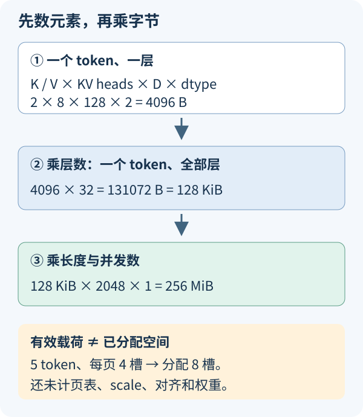

先修：L5 Attention、Lab2、整除取余、列表副本。建议 90–120 分钟读完并手算，再用 3–5 小时完成 Lab3。本讲的容量推导、分页映射与 Lab3 四题都是必做；共享、SWA、MLA 的拓展会明确标注，不再把必做分页写成进阶。
目标不是背一个长乘法，而是能从张量形状算字节，从预算反推容量，从逻辑位置找到数据，并解释模型没有计算的开销。先做 L7 与 Lab3，再读 L8；HW1/2 在 L7、L8 都完成后统一做。
1. 为什么存下 K/V 能省计算，却增加容量压力
自回归生成每次追加一个 token。已经计算过的位置，其 K/V 可以保留，下次让新 query 读取历史，而不必重新计算整个旧前缀。这里用存储换取重复计算的减少；它没有取消新 token 的计算，也没有免除读取历史 K/V 的流量。
假如每个历史 token 在每层都有一行 K、一行 V，序列越长，保存的行越多。模型权重通常先占用一块近似固定预算；KV 是权重、workspace 等预算之后，随上下文和并发增长的动态约束。不能说任何模型中 KV 都先于权重耗尽内存：有的权重本身就放不下，有的运行时 workspace 才是限制。
本讲讨论标准 MHA/GQA 的有效 KV 载荷。实际存储还可能有页尾、scale、索引和对齐开销。先把可证明的乘法做对，再讨论这些额外项。
2. 从一行向量开始推导容量
为了不把 batch 和 block_size 都写成 B，本讲用 N 表示并发序列数、P 表示页大小。
| 符号 | 含义 | 单位 |
|---|---|---|
| L | 层数 | 层 |
| Hkv | KV head 数，不是 query head 数 | head / 层 |
| D | 每个 KV head 的向量维度 | 元素 / head |
| S | 每条序列长度（先假设等长） | token / 序列 |
| N | 并发序列数，代码里常叫 batch | 序列 |
| w | 每元素字节数 | byte / 元素 |
| P | 每页容纳的 token 槽位 | slot / 页 |
一行 K 有 Hkv×D 个元素，一行 V 同样多，所以一个 token、一层是 2*Hkv*D*w 字节。乘 L 得一个 token 的全部层；乘 S 得一条序列；乘 N 得等长批次：
bytes_per_token = 2 * L * Hkv * D * w
KV_bytes = bytes_per_token * S * N系数 2 表示 K 与 V 两份，不是因为 dtype 是 2 字节；bf16 的 2 字节还要在 w 中乘一次。GQA 的 query heads 可以多于 KV heads，这个缓存公式只乘 Hkv。

读图从上往下：先算每 token 字节，再乘长度与并发；最后一格强调页尾未用位置也可能占分配空间。图中 128 KiB/token 来自一套具体参数，不是所有模型的常数。
3. 手算一：256 MiB 是怎么来的
给定 L=32、Hkv=8、D=128、w=2、S=2048、N=1。
- 每层每 token：
2*8*128*2=4096B，即 4 KiB。 - 全部层每 token：
4096*32=131072B，即 128 KiB。 - 一条序列：
131072*2048=268435456B，即 256 MiB。 - 32 条同长序列：
256*32=8192MiB，即 8 GiB。
MiB=2^20 B、GiB=2^30 B；GB=10^9 B，不要在报告中混写。若 S 变为 8192，一条变为 1 GiB，因为长度变成四倍。若只有 dtype 变成每元素 1 字节，有效载荷减半，但 scale/对齐不一定减半。
3.1 先运行一个小维度版本
以下代码仅演示轴的乘法，未包含作业完整校验：
layers = 2
kv_heads = 1
head_dim = 3
bytes_per_element = 2
bytes_per_token = 2 * layers * kv_heads * head_dim * bytes_per_element
for sequence_length in [0, 1, 4]:
print(sequence_length, sequence_length * bytes_per_token)输出 0 0、1 24、4 96。尝试只改变层数或 head 数，观察结果是否按比例变。空序列有效载荷为零，不等于真实服务空载内存为零。
4. 手算二：预算反推的是总 token，不是请求数
假设已经扣除权重和 workspace，留给 KV 的预算为 512 MiB，每 token 128 KiB。除法得到 4096 个总 token。为了证明这是最大值，必须同时验证：
4096 * 131072 <= 536870912
4097 * 131072 > 536870912若预算少 1 B，只能容纳 4095 个完整 token。用整数整除，不要四舍五入。如果每条固定 1024 token，才可进一步说最多 4 条；若各条长度不同，4096 不是并发数。
从整张卡开始规划时，还需先列账本：
available_for_KV = max(0, GPU_bytes * utilization - weight_bytes - workspace_bytes)
ideal_total_tokens = floor(available_for_KV / bytes_per_token)这里 utilization 是预留策略的一部分，不是自动测出的实际可用空间。页尾与元数据还会压低可容纳数量。用平均长度除总 token 只能做规划估计，不能保证任意一批变长请求都装得下。
5. 为什么引入分页：连续空间不等于全部空闲空间
如果给每条请求一段按最大长度预留的连续区域，实际请求较短时，区域尾部闲置。若采用可变连续区域，释放和增长也可能形成不便复用的空洞，扩容可能需要搬移。这里说的是具体分配策略的风险，不是任何连续布局都必然按最大长度分配。
分页把请求切成固定 P 槽一页，逻辑页按顺序连接，物理页可以不连续。块表负责映射。这样申请下一页不需要紧挨上一页；代价是管理页表、做地址转换，而且最后一页仍可能未满。相关设计见 PagedAttention 论文；本课不照搬其特定负载下的性能数字。
6. 手算三：页数、浪费与独立取整
S=5000、P=64。因为 78*64=4992，还差 8 个 token，需要第 79 页。分配 5056 槽，浪费 5056−5000=56 槽。
pages = (S + P - 1) // P
allocated_slots = pages * P
waste = allocated_slots - S边界：S=0 得 0 页；S=64 得 1 页、0 浪费；S=65 得 2 页、63 浪费。这说明从 64 增长到 65 不是仅增加一个概念分配槽位，而是需要一整页。
变长反例：三条长度 [1,16,17]、P=16，分别需要 1、1、2 页，共 64 槽、浪费 30。把总长 34 一次取整只得到 48 槽，它假设不同请求可共用可写尾页，不符合本课独立分页契约。HW2 Q11 专门检查这一点。
6.1 页大小没有“一句口诀”的最优值
同一条 10-token 请求，P=4 分配 12 槽，P=16 分配 16 槽，P=128 分配 128 槽；页数分别 3、1、1。小页能减少尾部浪费、细化完整前缀共享粒度，但页表项更多；大页可能减少管理开销，却更粗。
长前缀也不自动适合大页：匹配 70 token 时，P=16 可以复用 64，P=64 也可复用 64，P=128 只能复用 0 个完整 token。实际选择还依赖 kernel 支持、访问布局与长度分布。没有测量时只陈述容量与粒度权衡，不宣称 gather 必然更快。
7. 手算四：非连续页表和真实地址
P=2，table=[7,2]。逻辑 token 位置 3：逻辑页=3//2=1，偏移=3%2=1，物理页=table[1]=2。不是直接访问物理页 3，也不是物理页 1。

图中的箭头分两步，保持 token 逻辑顺序而允许物理放置不同。Lab3 测试会重编号，故不能依赖分配器恰好从 0 顺序发号。
若选定某一层的 K 数组，布局为 [num_blocks,P,Hkv,D]，则 base 已选好层及 K/V，不再重复加层偏移。给 P=2、Hkv=2、D=3、w=2、head=1、dimension=2：
block_bytes = 2 * 2 * 3 * 2 = 24
token_stride = 2 * 3 * 2 = 12
head_stride = 3 * 2 = 6
relative_byte_offset = 2*24 + 1*12 + 1*6 + 2*2 = 7070 B 是相对于这个 K 数组 base 的字节偏移。换一种维度顺序，stride 也会变，不能把这个表达式当作所有缓存布局的固定地址公式。
8. Lab3 的最小生命周期：先学数据，再学有限所有权
Lab3 有连续和分页两种容器，均只表示单条序列。append 保存输入副本；get 返回半开区间 [start,end) 的逐行副本；free 清空序列。分页容器字典可以继续增长，没有有限设备池和共享引用。这不是一个完整服务器。
为什么副本是正确性问题？若 append 直接保存调用者列表，调用者随后改输入，缓存内容也变；若 get 只复制外层列表，调用者改返回值内层行，内部内容也变。两个方向都要保护。长度 0 的 get(0,0) 是合法空结果，不应该误当越界。
第 5 周 L9 才加入有限容量、多个所有者与失败原子性，L10 再讨论前缀内容身份和淘汰。这里的分页是必修，但共享池不是 Lab3 的隐藏要求。
9. 拓展：共享、SWA 和 MLA 各改变哪一项
共享把相同、可安全复用的完整前缀只保留一份。n 条请求内部共享长 Pfx 的前缀，在不计额外保留副本的理想情况下少 (n−1)*Pfx*bytes_per_token。若已有一份常驻缓存，n 个新消费者避免 n 份新增复制，口径不同。refs=0 表示可回收，不表示缓存内容必然消失；第 5 周详解。
SWA 是模型注意力范围的定义：若某层只依赖最近 W 个 token，该层缓存可按窗口有界。不能任意删掉全局 attention 的历史还声称计算等价。混合全局层时，总缓存仍可能随长度增长。bounded replay/state cache 属于具体引擎机制，重算多少 token、保存哪些层要查对应实现和模型，不能把固定 128 或固定层数当普遍规律。
MLA 改变的是缓存表示。教学模型用一份共享 latent 加 RoPE 部分，若两者同 dtype，载荷为：
MLA_bytes = L * (latent_rank + rope_dimension) * S * N * w没有额外 K/V 系数 2，是因为不是各存一整份展开 K、V。L=32、rank=512、rope=64、S=2048、N=1、w=1 时为 37748736 B=36 MiB；w=2 时为 72 MiB。与前面的 GQA bf16 256 MiB 对比，同 dtype 的表示收益是 256/72≈3.56，混合 dtype 比较 256/36≈7.11 同时含量化收益。此处忽略 scale 和对齐，结构背景见 DeepSeek-V2 原论文。这些是延伸理解，不要求 Lab3 实现 MLA kernel。
10. 自测、排错和出口
- L=32、Hkv=8、D=128、S=4096、N=4、w=1，载荷是多少？w=2 呢？
- 长度 5、页大小 4，需要几页？
length//page_size为什么错？ - table=
[9,2,7]、P=2，get(1,5) 要依次读哪些物理位置？ - 使用平均序列长度算并发上限，为什么不能当作硬保证？
基础解析
第 1 题为 1 GiB 与 2 GiB。第 2 题需 2 页，整除只得 1，漏掉剩余 1 token。第 3 题依次 (9,1),(2,0),(2,1),(7,0)，总共四个 token。第 4 题平均值不能约束任意批次的长请求组合，还没计算各条独立页尾浪费。
- KV 总量正确是否证明 get 的副本语义正确？
- “长前缀就应该用大页”和“KV 一定比权重先耗尽内存”分别缺了哪些条件？
反例解析
容量测试看不出列表别名，必须修改输入和返回行后再读缓存。页大小还影响对齐命中与尾部浪费，需结合实现和负载；权重能否装下、workspace 与预留比例先决定 KV 可用预算，KV 只是随请求增长的动态限制之一。
调试先确定自己算的是有效容量、已分配容量还是读取流量；再查轴、单位与取整；最后检查物理查表和副本。完成 Lab3 后读 L8 量化，再统一做 HW1 和 HW2。